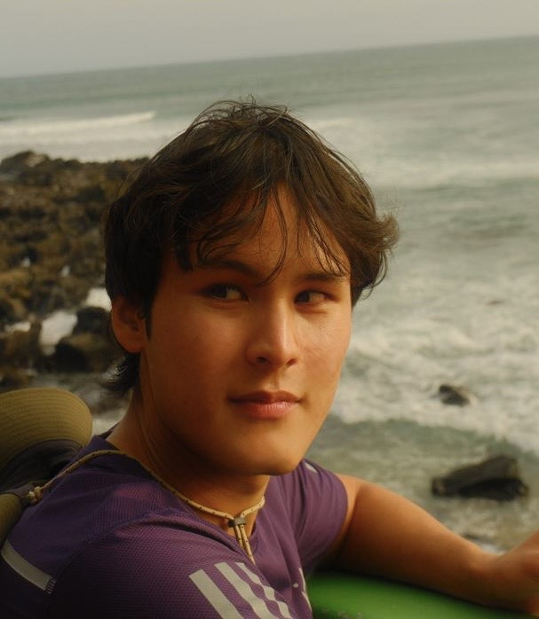

Trajectory-Based Liability: Regulating High-Capability Agentic AI in the 2026 Capability Frontier
Journal of AI Law and Regulation (AIRe 2/2026) · Tsinghua China Law Review award-winning paper

I am a research assistant at Queen Mary University of London under Prof. George A. Walker, and a visiting scholar at Peking University and affiliate researcher of the OSS-Lab@PKU-SEI, supervised by Prof. Minghui Zhou.
I am currently completing my double master between London and Singapore. Prior to my master, I received my bachelor's degree from Université Paris-Saclay.
I work on a variety of research directions on AI, AI and Law, ML, safety, alignment, technical governance and capabilities. My technical work spans structural causal models, deterministic multi-agent simulation, runtime control, and evaluation harnesses; on the legal side, I work on liability, causal attribution, and comparative regulation across the globe (expertise in the EU, UK, and China). I am currently based in Singapore.
Journal of AI Law and Regulation (AIRe 2/2026) · Tsinghua China Law Review award-winning paper
ICML 2026 Workshop on Agents in the Wild · WAIC Academic 2026, Shanghai · forthcoming in Springer proceedings · Oral*
KDD 2026 Workshop on Evaluation and Trustworthiness of Agentic AI
KDD 2026 PILA Workshop · Oral*
UAI 2026 SafeAI Workshop
IJCAI-ECAI 2026 Workshop · Oral*
Data for Policy 2026 Conference · Data & Policy, Cambridge University Press, accepted · Oral*
Business Law Review, Volume 5, Issue 47, 2026
Preprint